All done before market opens. Never during live price action.
Zoomed into 5-minute MNQ candles. Two overlays: Volume Profile + Delta Profile per candle.
All frames extracted from the standing whiteboard session (~13:00–34:00). These are the actual diagrams Chris draws live during the strategy walkthrough.
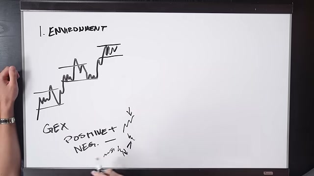
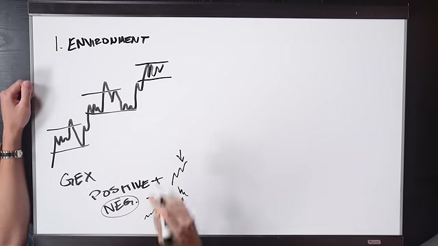
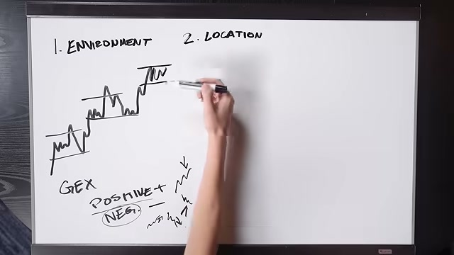
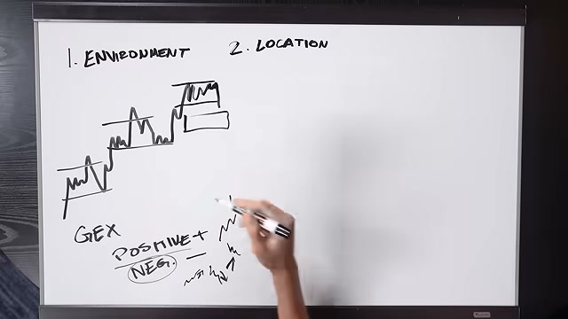
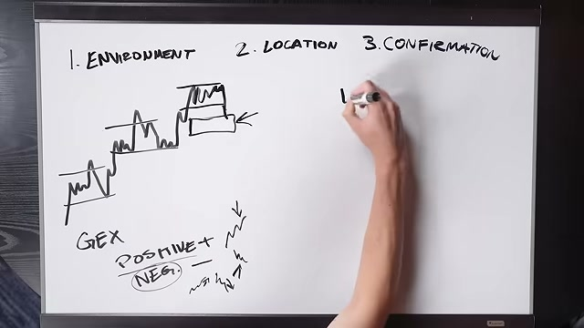
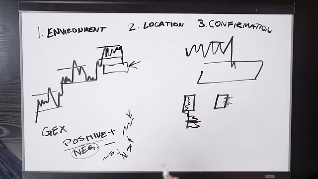
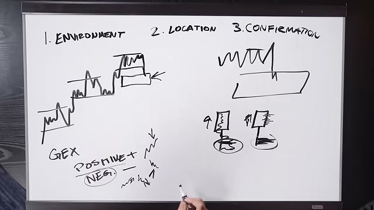
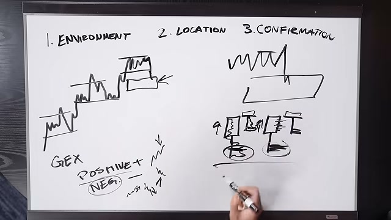
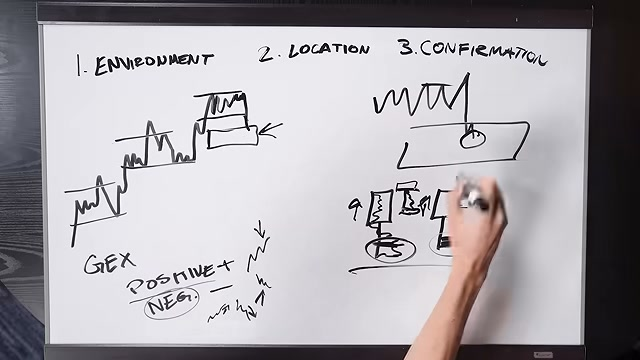
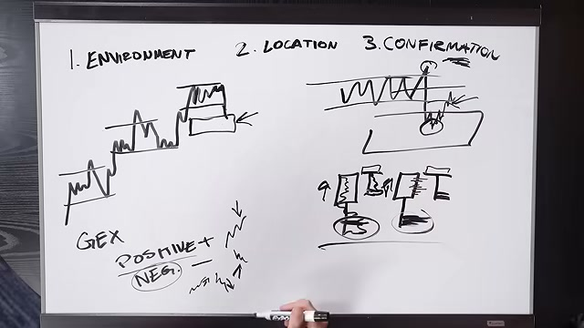
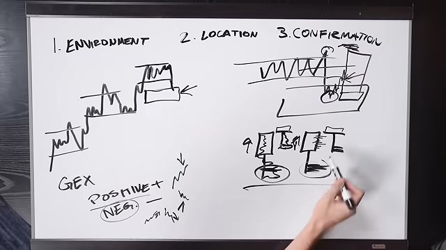
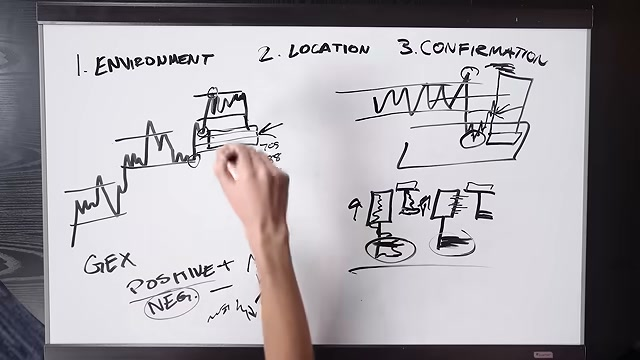
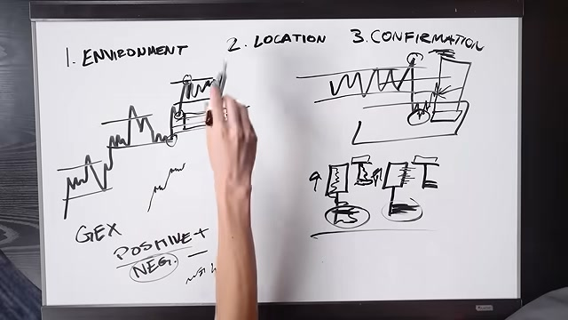
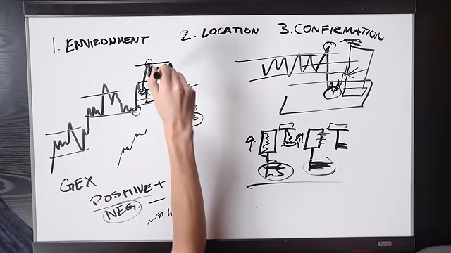
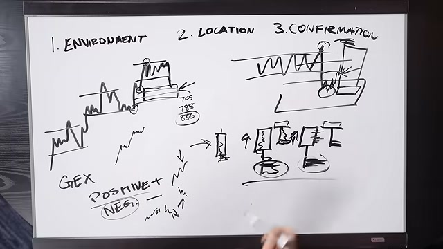
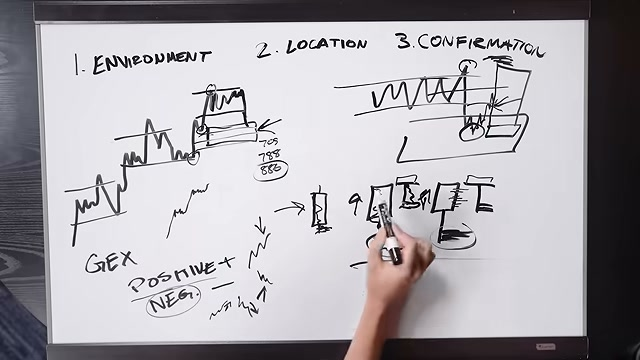
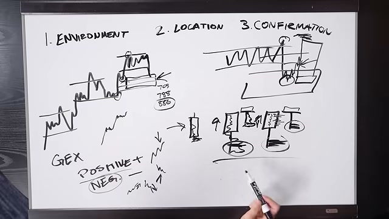
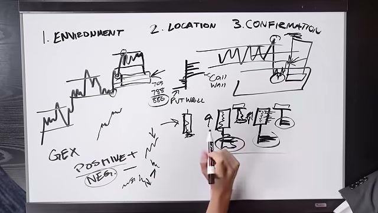
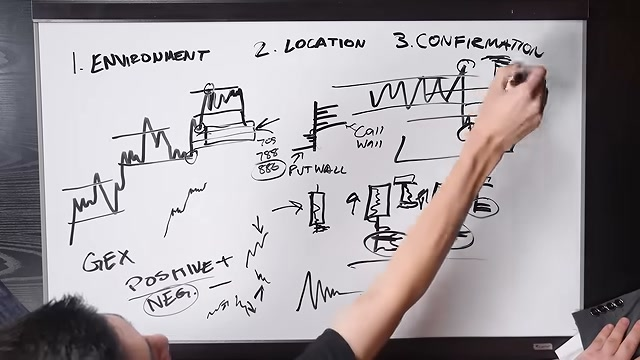
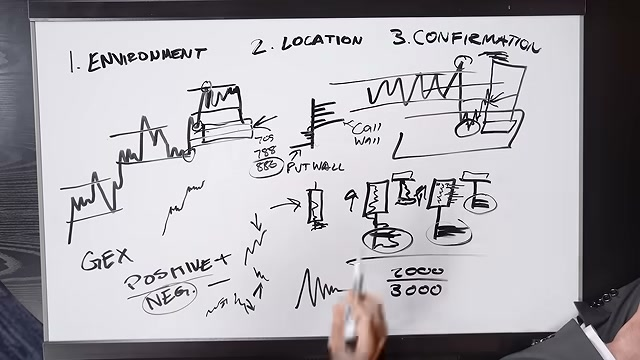